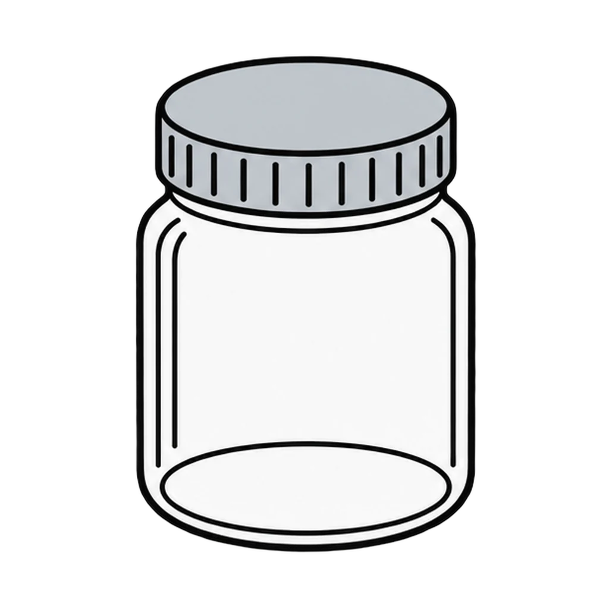
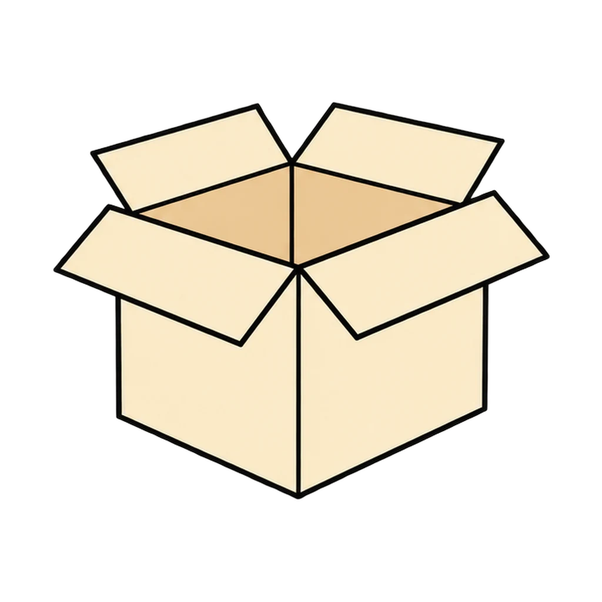
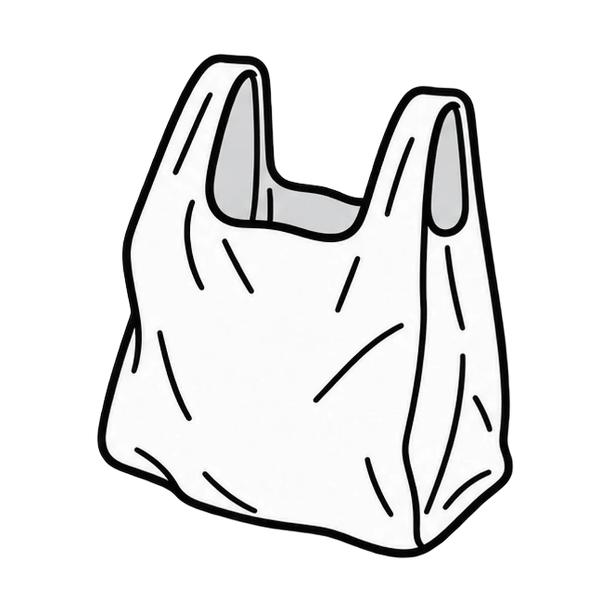
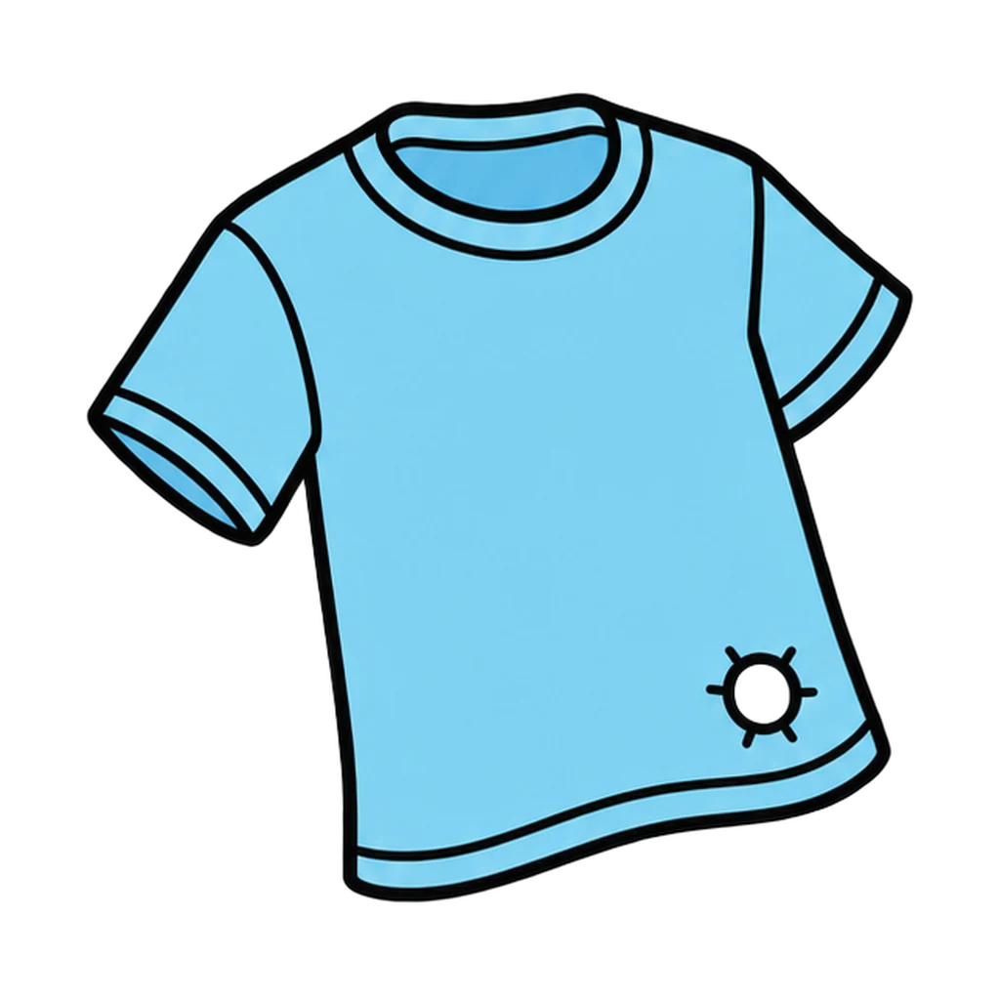
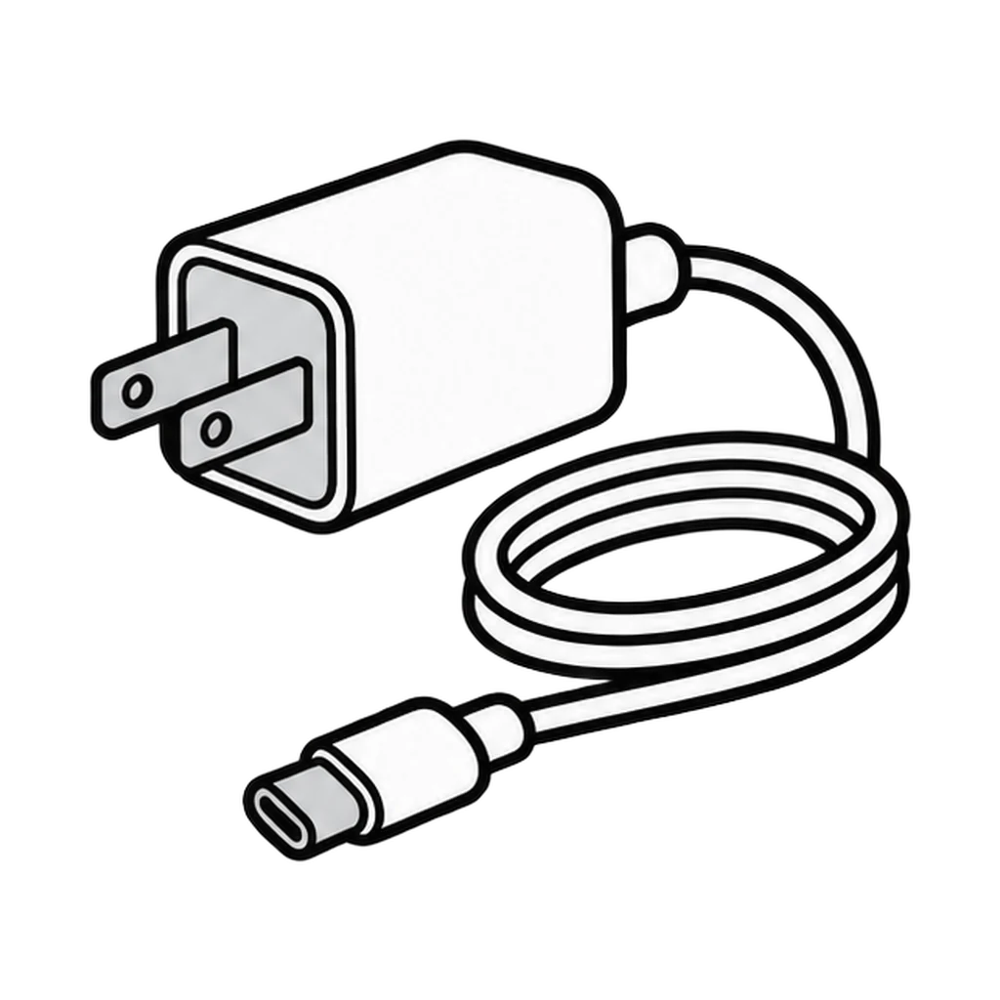
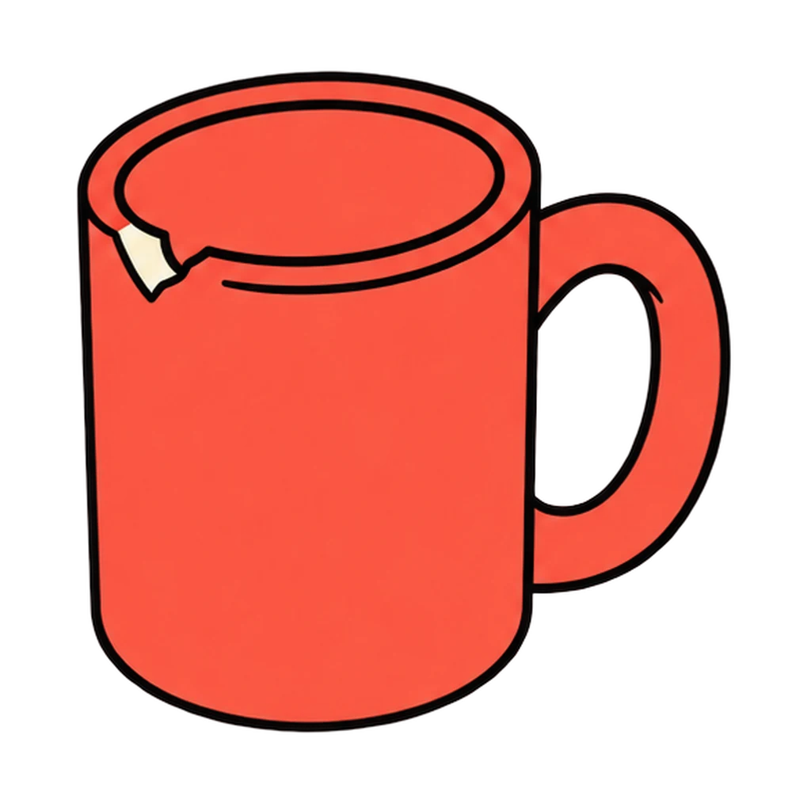
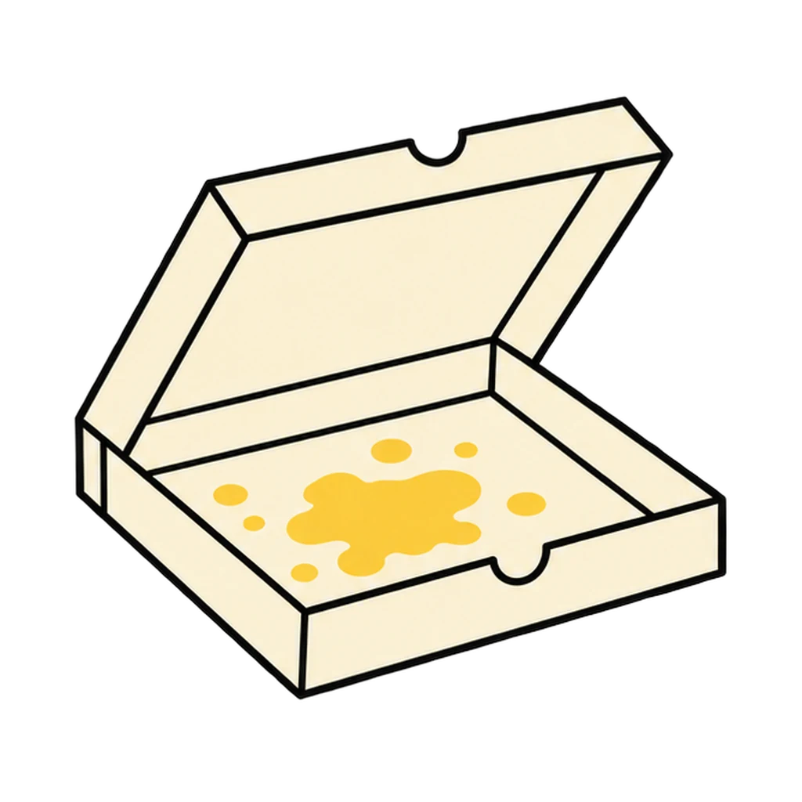
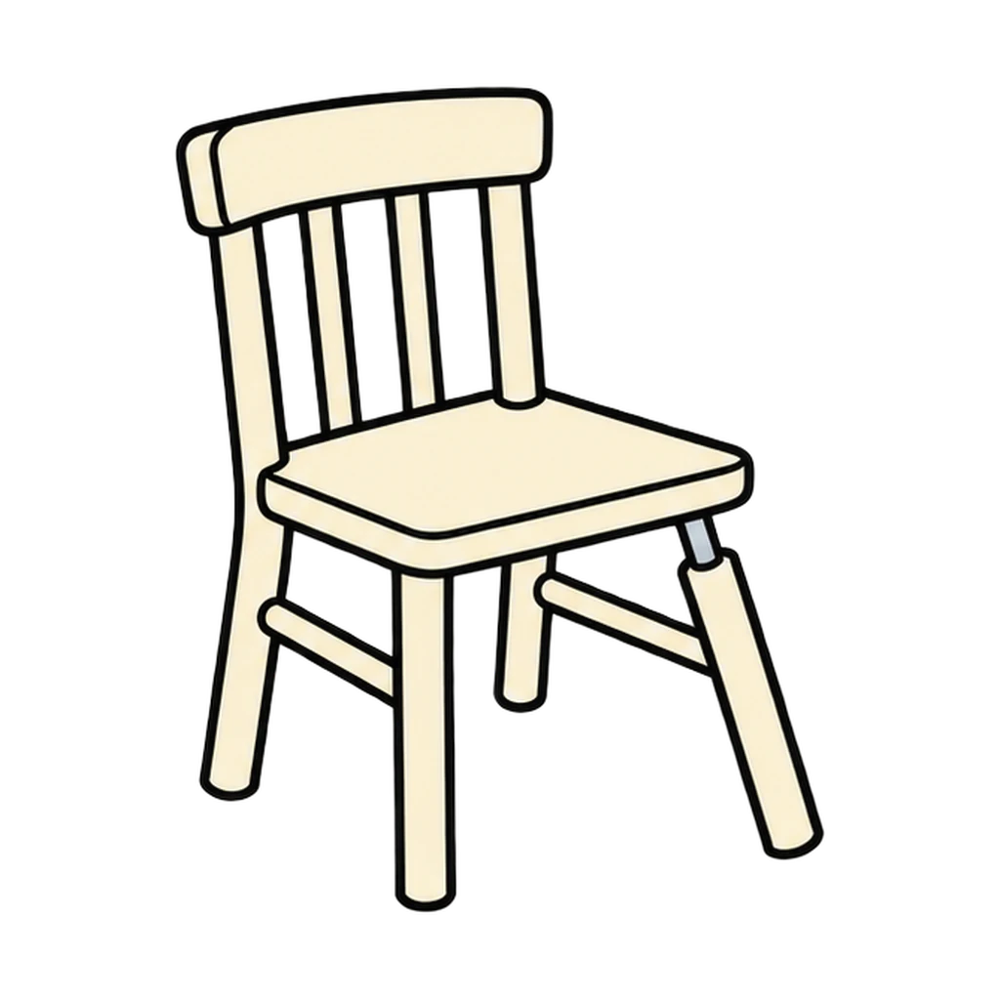
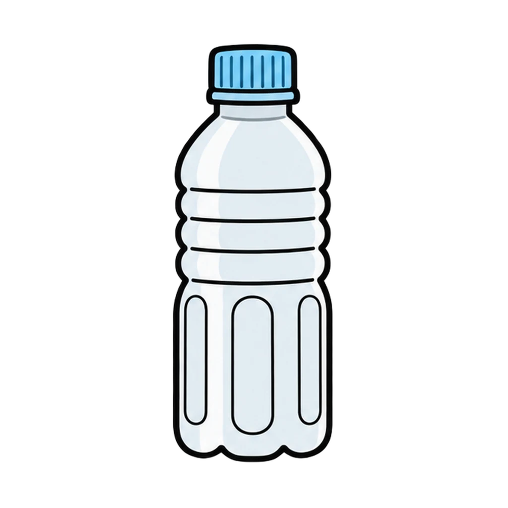
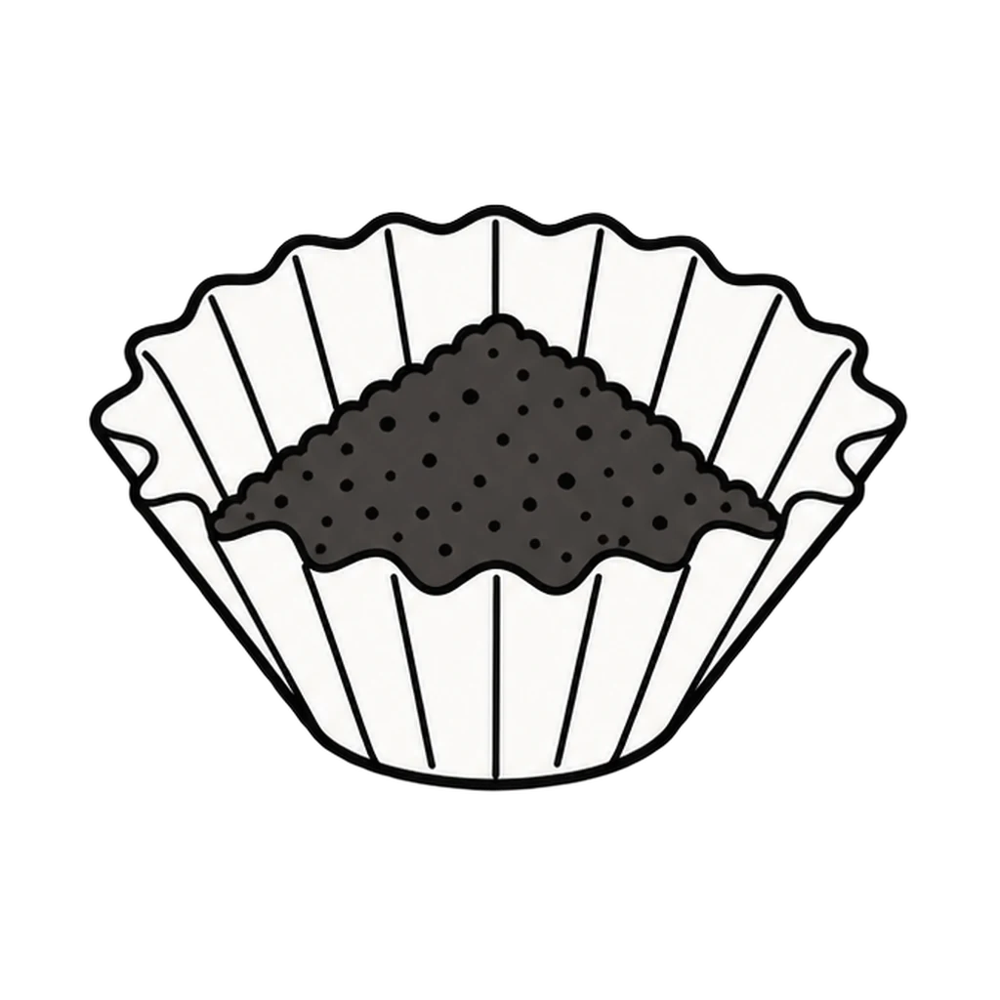

Teacher note
Reviews Lesson 4.5. Reviews Lesson 4.5: the four Rs sort of twelve household items and the five green factors from the Greener Room Swap. Use it in the first minutes of Lesson 4.5 after the class sort, or as the review before quiz items 11 and 12, or as the GREEN label reminder in Lesson 4.14 Day 3. About two and a half minutes. The end panel repeats why reduce comes first.

Four Bins
A definition or a household item appears. Tap it into the one of the four Rs that does the least harm. Then an item from a teen's bedroom appears, and you tap the green factor it improves.
How to play
Round 1










Done
The ones to study:
Worth knowing by heart:
- Reduce and reuse come first because recycling still costs energy and half of what goes in the bin does not get recycled.
- The five green factors in a living space: natural light, materials, indoor air, water, waste.
- The greenest choice is usually the one that costs the least.